Four kingdoms, countless cultures, one unforgetable journey.
From the drumming hills of Buganda to the vibrant markets of Karamoja, each region of Uganda tells its own story. Explore the traditons, Kingdoms, languages and people that make the pearl of Africa.
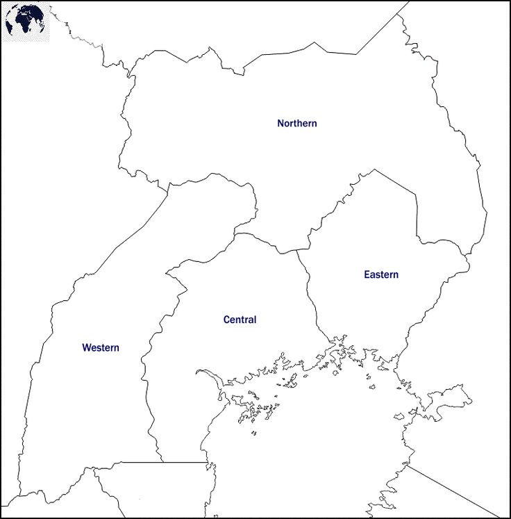
| Region | Kingdom /People |
Known for | Best time to Visit |
|---|---|---|---|
| Central | Buganda | Drumming Bark Cloth Kasubi Tombs |
June-Aug Dec-Feb |
| Northern | Acholi Langi Karamajong |
Dance Beardwork Semi-normic culture |
Dry season |
| Western | Toro Bunyoro Ankole Bakiga |
Mountain gorillas Empango Festival Pottery |
June-Sept |
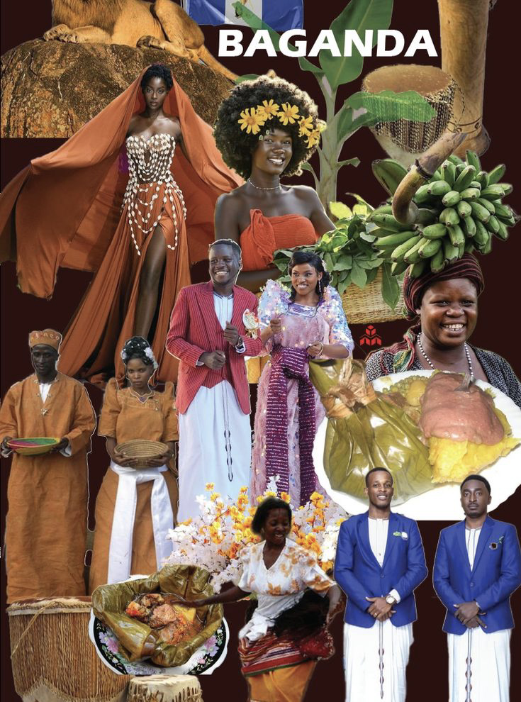
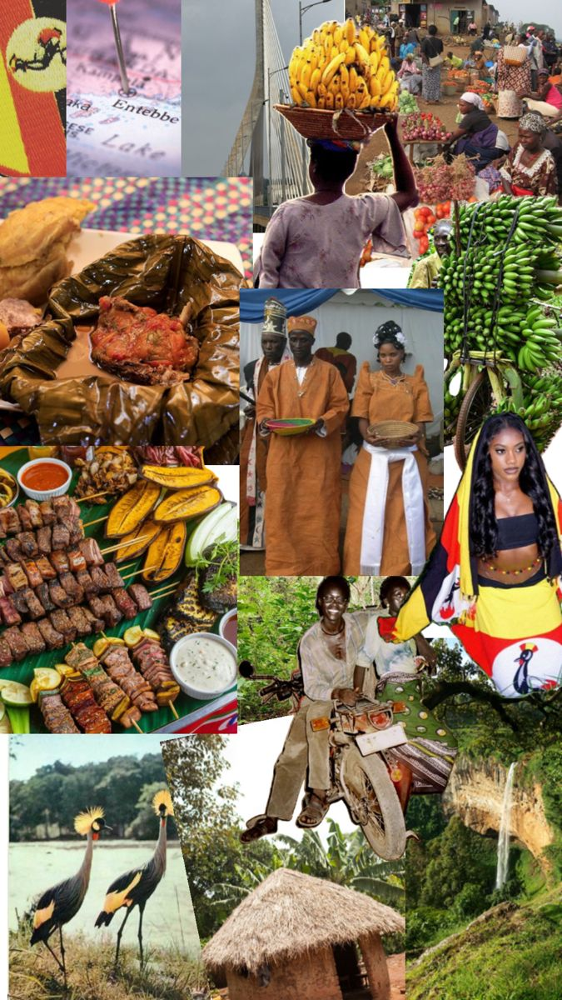
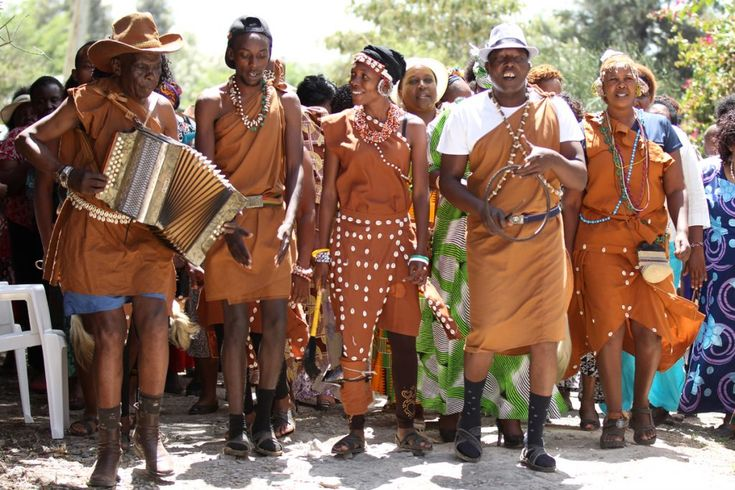
Heart of the kingdom
Overview
The central region is home to the kingdom, Uganda's largest tradition kingdom with Kampala as its hub, this region blends ancient tradition with modern life.
Kasubi tombs: UNESCO world heritage site, burial grounds of Buganda kings.
Lubiri Palace: The king's residence with rich history.
Bark Cloth: Making ancient craft passed through generations.
Luganda(Primary)
English widely spoken
Luwombo(steamed meat/groundnuts in banana leaves)
Flesh Nile patch
Matooke(steamed green bananas)
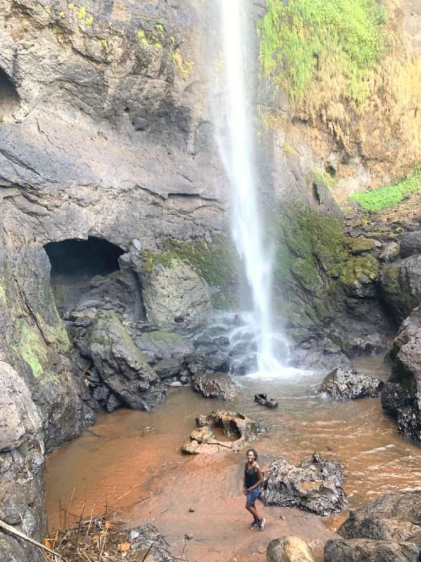
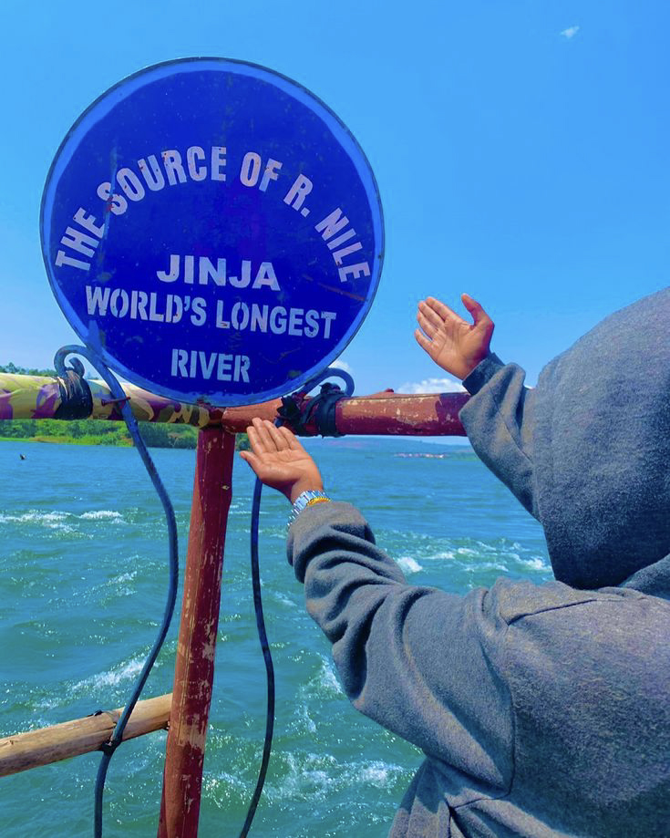
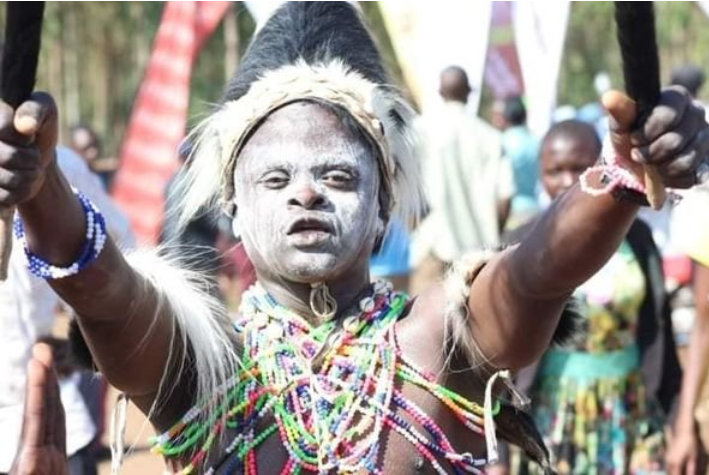
"Where the Nile meets tradition"
Overview
Eastern region stretches from the shores of lake Victoria to the slopes of Mt.Elgon pulses with energy and tradition.
Imbalu Ceremony-Annual circumcision rituaal of bagishu.
Source of the Nile-Cultural significance in Busoga.
Nyero Rock paintings- Ancient ancestral art.
Jinja city-Cultural crossroads and adventure hub.
Lusoga
Ateso
Lugishu
Swahili and English
Malewa (Bambo short delicacy)
Groundnuts saurce
Fresh fish from Lake Victoria
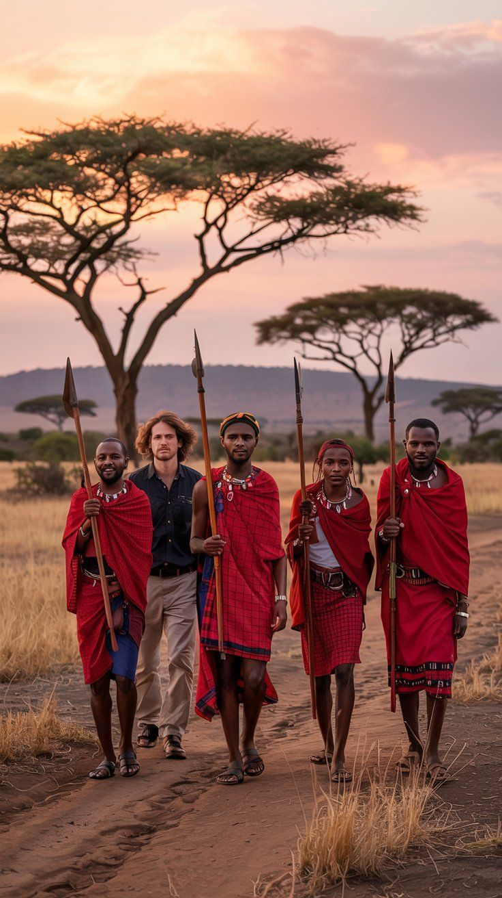
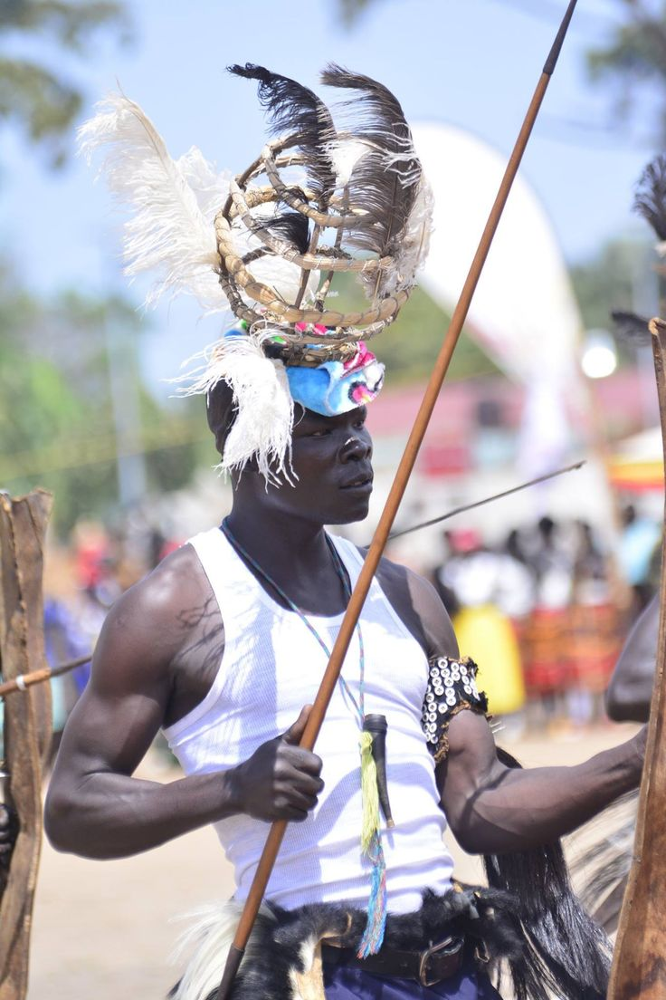
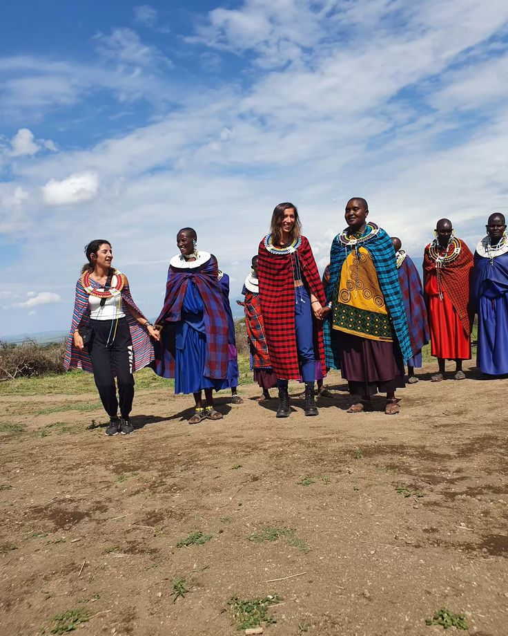
"Land of warriors, dancers and storytellers"
Overview
Northern Uganda offers a distinctly different, cultural experience from the semi-normadic Karamajong to the rhythm-loving Acholi, this regin preserves ancient ways of life
Karamajong manyattas-Traditional homesteads
Acholi dancing-Energetic Bwola and lakalaka
Lira cultural centre-Langi heritage preservation
Gulu market-vibrant cultural exchange.
Acholi
Langi
Karamajong
Swahili widely spoken
Simsim(Sesame)paste
Millet braed
Roasted goat
Wild herbs and greens
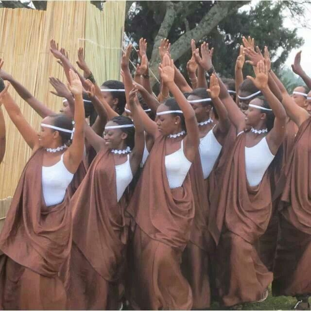
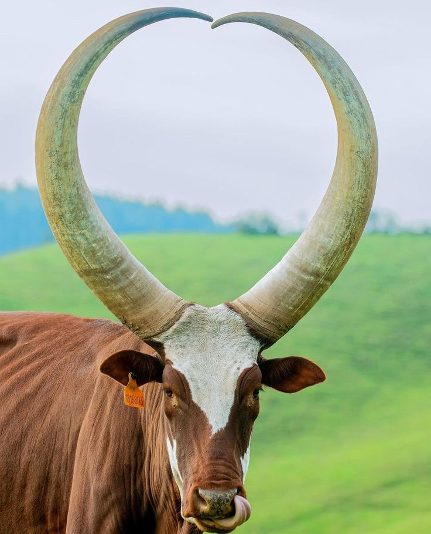
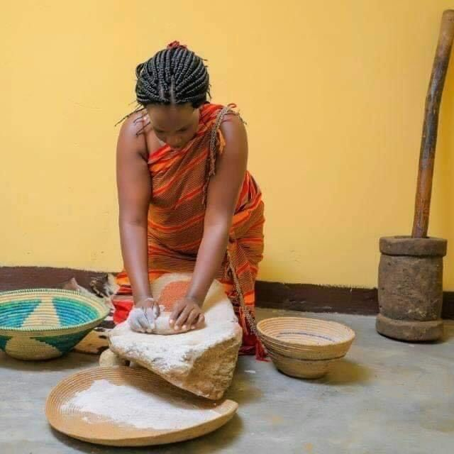
"Kingdom in the mist"
Overview
Western Uganda is a land of rolling hills, crator lakes and ancient kingdoms. The region offers dramatic landscapes alongside deep cultural traditions.
Empango festival: Annual Bunyoro kingdom celebrations
Batooro drummers: Renowned traditional musicians
Bakiga Terraces: Agriculturl heritage in Kigezi.
Runyoro
Rutoro
Runyankole
Rukiga
English widely understood.
Eshabwe (clarified butter source)
Omukaro(dried meat)
Fresh mountain meat
Highland potatoes.
Plan your cultural journey